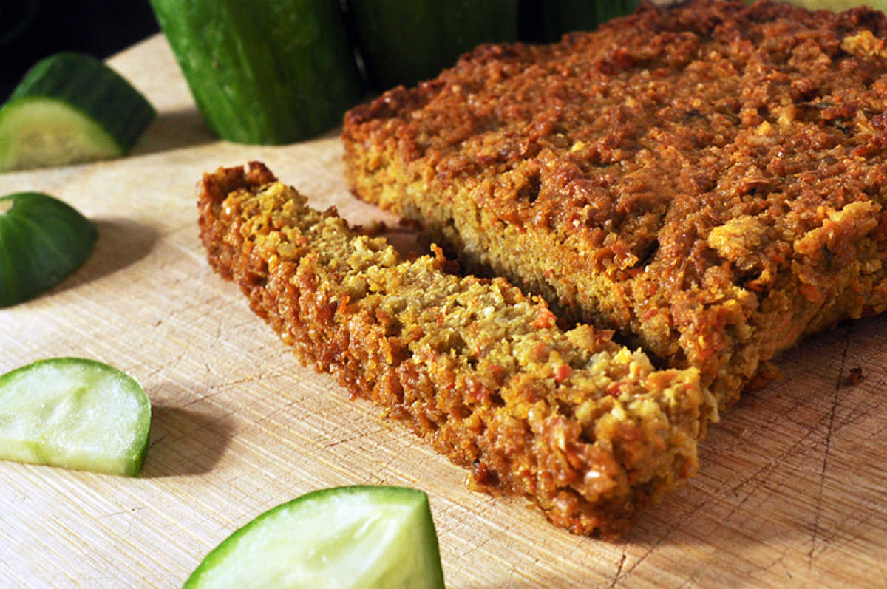

vege pate
4 blocks — 60 minutes
Végé pâté is Quebec staple food. It's great with veggies, on crackers and in sandwiches. My recipe is grainy because of the use of rolled oats, but don't worry, it still holds itself well together.
Purchasing it pre-made can be expensive, and not all brands are good. Making your own is no trouble, and if frozen, it can keep for a long, long time.
Substitutions
A lot of végé pâté recipes call for whole wheat flour, we've made pâté with it before with great results. Using flour will result in a smoother pâté. If you don't have oats, you can use whole wheat flour, or other wholegrain flours instead.
It's also possible to use regular potatoes, or pumpkin instead of sweet potatoes.
 sunflower seeds140 g
sunflower seeds140 g sweet potatoes1 large, grated
sweet potatoes1 large, grated carrots1 large, grated
carrots1 large, grated olive oil30 ml
olive oil30 ml yellow onion1
yellow onion1 garlic3 cloves
garlic3 cloves rolled oats60 g
rolled oats60 g soy sauce45 ml
soy sauce45 ml lemon juice5 ml
lemon juice5 ml thyme5 g
thyme5 g oregano5 g
oregano5 g water80 ml
water80 ml black pepperto taste
black pepperto taste nutritional yeast15 g
nutritional yeast15 g
preparation
- Soak 140 g (1 cup) of raw unsalted sunflower seeds in water for 2 hours. Then, drain, rinse well and transfer to a big bowl. Puree the seeds using an immersion blender. Set aside.
- Preheat oven to 190 °C (375 °F).
- Skin, and grate 1 large potatoes. Also, grate 1 large carrot. Then transfer both the grated carrot and potatoes into the big bowl with the sunflower seeds.
- Chop 1 medium yellow onion and 3 garlic cloves. Bring a pan to medium heat, add some vegetable oil and the chopped yellow onion. Sautée until browned, then add the minced garlic and cook for another minute. Pour contents of pan into the big bowl.
- Pulse 60 g (1/2 cup) of rolled oats into a fine powder using an immersion blender or mortar and pestle. Add oat powder into the big bowl.
- Add 30 ml (2 tbsp) of olive oil, 45 ml (3 tbsp) of soy sauce, 5 ml (1 tbsp) of lemon juice, 5 g (1 tsp) of dried oregano, 5 g (1 tsp) of dried thyme and 80 ml (1/3 cup) of water to the rest of the ingredients. Blend everything using an immersion blender, then add a pinch of black pepper and 15 g (1/4 cup) of nutritional yeast. Mix it in with a spoon.
- Pour mixture into a greased 8x8 baking dish, and bake for 50 minutes. Let cool before serving. Keeps for a week in the fridge, and even longer if frozen.